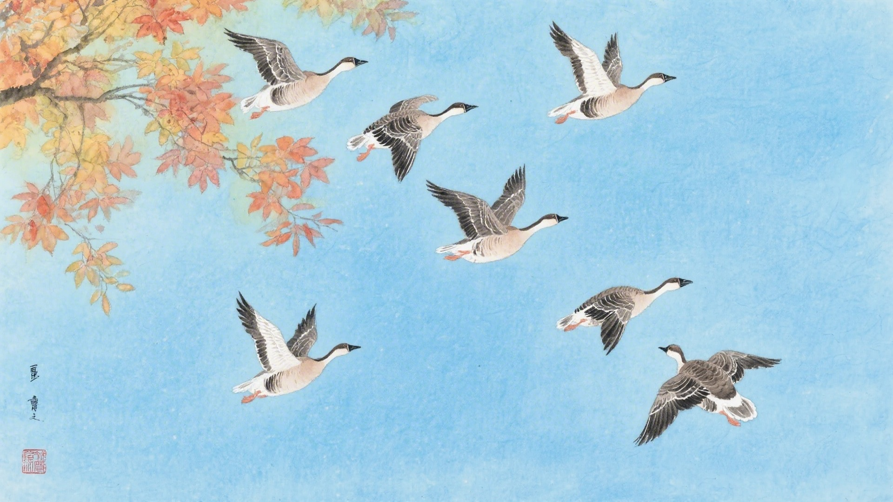
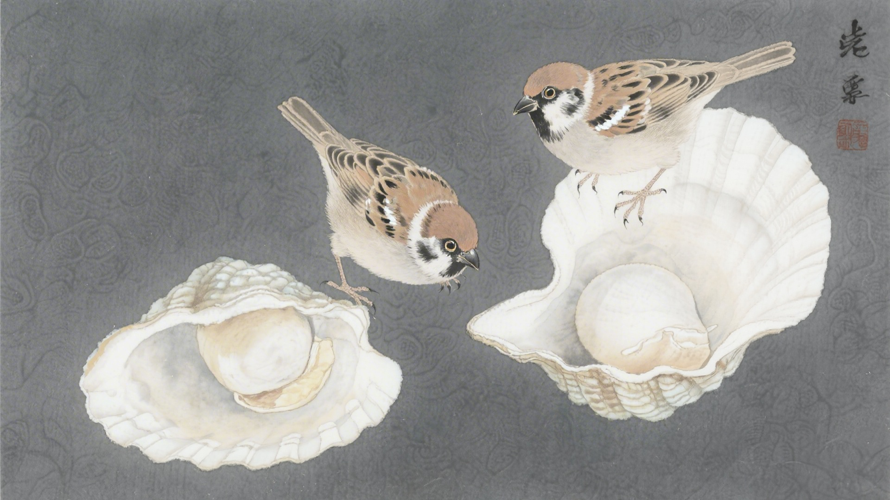
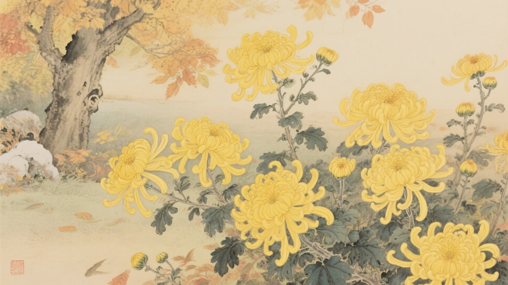
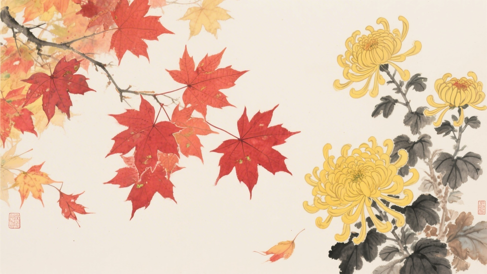
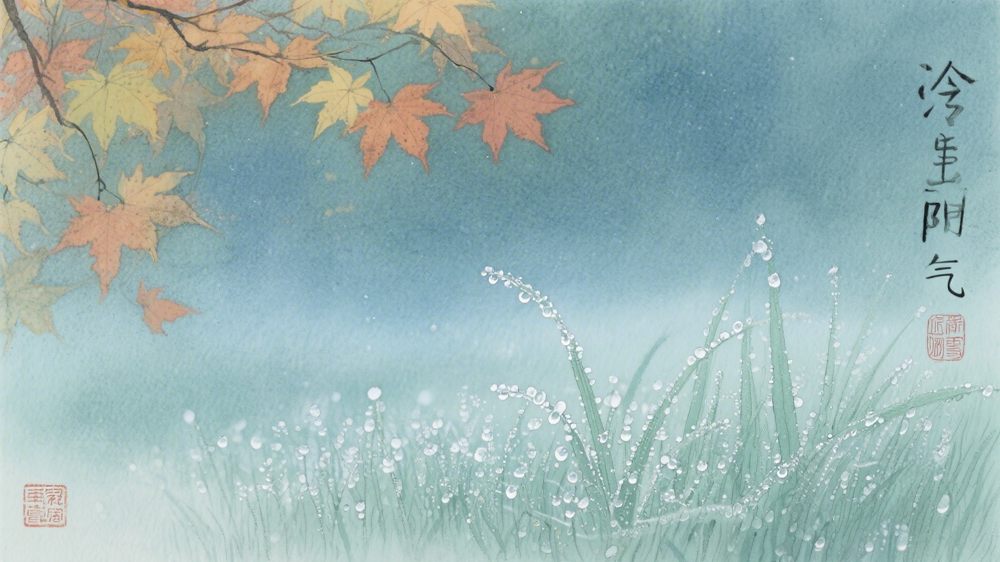

《中国传统色：故宫里的色彩美学》一书中为什么把下面这些颜色归入寒露节气？
醽醁、翠涛、青梅、翕赩
九斤黄、杏子、媚蝶、韎韐
东方既白、绀宇、佛头青、花青
弗肯红、赤璋、茧色、密陀僧
寒露时节，鸿雁排成行，雀鸟潜入水，菊花遍地黄。古人说寒露有三候：鸿雁来宾，雀入大水为蛤，菊有黄华。这十六种颜色，便从这三候里来。
寒露的"寒"，是露水开始冷了。早晨的露水不再是温润的，带着凉意。颜色也冷下来，从暖色变成冷色，从明艳变成沉静。
对应：寒露节气一候"鸿雁来宾"的起、承、转、合四色。
色彩意象：鸿雁做客，远道而来。
从青绿到红色，是鸿雁做客的色彩变化，也是寒露时节最生动的画面。

对应：寒露节气二候"雀入大水为蛤"的起、承、转、合四色。
色彩意象：雀鸟化蛤，神秘莫测。
从橙黄到粉红，是雀鸟化蛤的色彩变化，也是寒露时节最神秘的传说。

对应：寒露节气三候"菊有黄华"的起、承、转、合四色（其一）。
色彩意象：菊花盛开，秋色满园。
从素白到深蓝，是菊花盛开的色彩变化，也是寒露时节最深沉的意境。

对应：寒露节气三候"菊有黄华"的起、承、转、合四色（其二）。
色彩意象：菊黄枫红，秋色缤纷。
从淡红到深褐，是菊黄枫红的色彩变化，也是寒露时节最缤纷的画面。

寒露这天，早晨出门，露水打湿了鞋。露水是冷的，不是凉的。颜色也跟着冷，红的冷成紫，黄的冷成褐，青的呢，本来就冷，更冷了。

颜色也懂得收。它们把夏天的张扬收起来，把秋天的深沉拿出来。像是老人，年轻时的热闹都经历过了，现在只想安安静静地过日子。
（以上解读不代表原书观点）